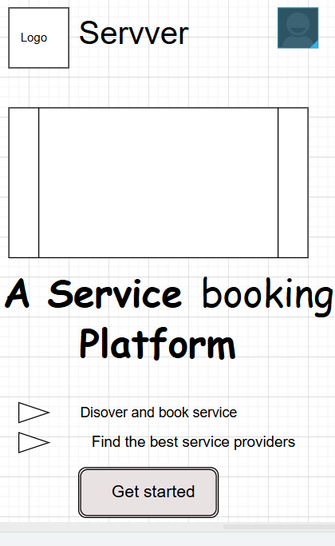
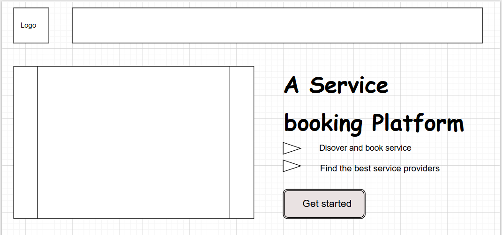

Servver
The name “Servver” represents a modern platform for discovering and booking service workers. It is short, memorable, and clearly reflects the platform’s purpose: connecting users with trusted service providers for everyday needs such as home repairs, car servicing, cleaning, and more.
The purpose of this website is to provide information about the Servver mobile application. It allows visitors to understand how the platform works, view available service categories, learn about features, and contact the team. It helps users discover reliable service workers in Nigeria and book them easily.
Primary Color – Deep Blue (#003366)
Used for: headings, navigation, key buttons, and UI accents.
Secondary Color – Warm Gold (#f1b24a)
Used for: emphasis highlights, icons, and action indicators.
These colors were selected because deep blue represents trust and professionalism, while gold adds warmth and approachability. Together they reflect the brand identity of Servver.
Font Family: Poppins
This modern sans-serif font is clean and professional, making the content easy to read.


These wireframes illustrate the layout structure for the Servver homepage in both mobile and desktop views. They include areas for the logo, header, hero image, key messaging, feature descriptions, and call-to-action button.